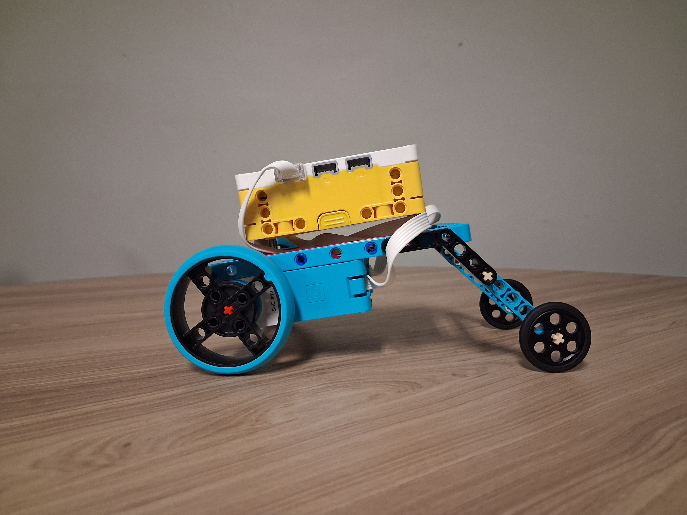

I spent a lot of time building the framework for the car and when it came to choosing what to use for wheels I used the 2 big wheels with the 2 smaller black wheels. I was worried that it wouldn't be able to turn in place, but due to less friction of the small wheel compared to the big wheel it was able to turn.